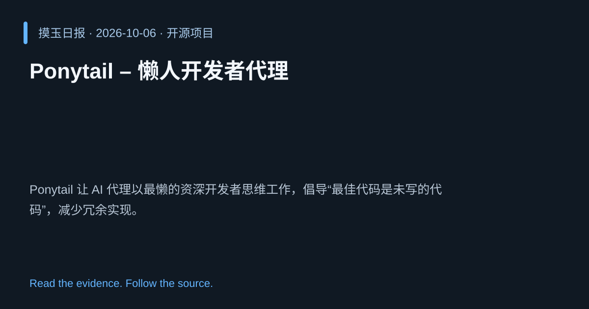

2026-10-06 · Asia/Shanghai · 开源项目 · #15
Ponytail – 懒人开发者代理
DietrichGebert/ponytail
Ponytail 让 AI 代理以最懒的资深开发者思维工作，倡导“最佳代码是未写的代码”，减少冗余实现。
为什么值得关注
模拟经验丰富开发者直觉，降低代码生成后的人工审查负担。

热度 20.0 / 100；排名与评分保留该期记录。
2026-10-06 · Asia/Shanghai · 开源项目 · #15
DietrichGebert/ponytail
Ponytail 让 AI 代理以最懒的资深开发者思维工作，倡导“最佳代码是未写的代码”，减少冗余实现。
模拟经验丰富开发者直觉，降低代码生成后的人工审查负担。

热度 20.0 / 100；排名与评分保留该期记录。